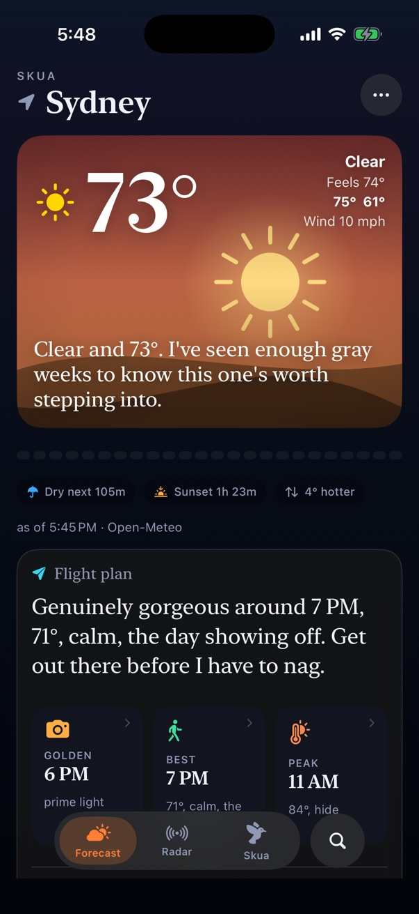

Skua · iPhone · open source
Weather that reads your day.
A forecast that tells you when to be out, watches for rain, and comes with a bird that has opinions.
Your fowl-weather friend.
TestFlight beta coming. Free, open source, no ads, no accounts.

Simulator screenshot of the current build.